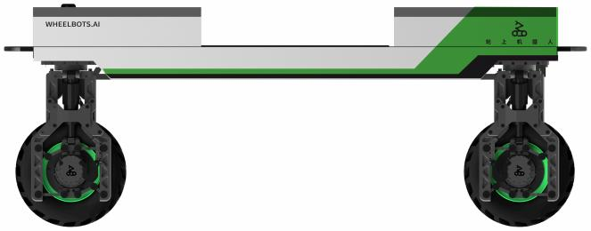

通用型农业机器人平台Universal Agricultural Robot Platforms
模块化设计 / 标准化接口，搭载除草、喷洒、打顶、间苗、监测、采收、运输等模块，实现一机多用。
Modular design with standardized interfaces for weeding, spraying, topping, thinning, monitoring, harvesting and transport — one machine, many uses.

WB-51
小型灵活平台，适合精细作业与中等负荷场景。造型仅供参考，壳体为定制选项，客户可按需定制。
A compact, agile platform for precision tasks and medium payloads. Image for reference only; housing is customizable.
| 条目名称Item | 单位Unit | 参数Value | 备注Note |
|---|---|---|---|
| 整车长度Overall Length | mm | 2800 | 可按需定制Customizable |
| 整车宽度Overall Width | mm | 1550 | 可按需定制Customizable |
| 整车高度Overall Height | mm | 1100 | 可按需定制Customizable |
| 离地间隙Ground Clearance | mm | 600 | 可按需定制Customizable |
| 轮距（中心距）Track (center) | mm | 800~1300 | 可按需定制Customizable |
| 最大质量Max Mass | kg | 1200 | |
| 承载质量Payload | kg | 500 | |
| 最大爬坡度Max Gradeability | % | 50 | 满载Full load |
| 最高时速Max Speed | kph | 10 | |
| 轮胎规格Tire Spec | / | 4.00-12 8PR | |
| 电压平台Voltage Platform | V | 72 | |
| 驱动电机额定功率Drive Motor Rated Power | kW | 3.6 × 4 | |
| 电池包容量Battery Capacity | kWh | 20 | 可定制，最大 40 kWhCustomizable, up to 40 kWh |
| 交流充电功率AC Charging Power | kW | 3.3 | 220VAC |
| 驱动响应时间Drive Response | ms | 100 | |
| 制动响应时间Brake Response | ms | 100 | |
| 转向响应时间Steering Response | ms | 100 | |
| 定位精度Positioning Accuracy | cm | 2 | |
| 算力Compute | TOPS | 80 | |
| 整机防水防尘等级Ingress Protection | / | IP55 | 底盘三电 IP67Chassis e-powertrain IP67 |
| 整机工作温度Operating Temp | ℃ | -10 ~ 50 |
注：产品作为模块化平台，参数可能会根据最终方案进行调整。Note: As a modular platform, specifications may vary with the final configuration.

WB-300
大型重载平台，增程动力，适合大田规模化作业与重载上装。造型仅供参考，壳体为定制选项，客户可按需定制。
A heavy-duty platform with range-extender power for large fields and heavy implements. Image for reference only; housing is customizable.
| 条目名称Item | 单位Unit | 参数Value | 备注Note |
|---|---|---|---|
| 整车长度Overall Length | mm | 4000 | 可按需定制Customizable |
| 整车宽度Overall Width | mm | 1850 | 可按需定制Customizable |
| 整车高度Overall Height | mm | 1500 | 可按需定制Customizable |
| 离地间隙Ground Clearance | mm | 600 | 可按需定制Customizable |
| 轮距（中心距）Track (center) | mm | 900~1600 | 可按需定制Customizable |
| 最大质量Max Mass | kg | 2000 | |
| 承载质量Payload | kg | 700 | |
| 最大爬坡度Max Gradeability | % | 50 | 满载Full load |
| 最高时速Max Speed | kph | 5 | |
| 轮胎规格Tire Spec | / | 6.00-16 | |
| 增程器功率Range Extender Power | kW | 18 | |
| 油箱容积Fuel Tank | L | 35 | |
| 电压平台Voltage Platform | V | 48 | |
| 驱动电机功率Drive Motor Power | kW | 5 × 4 | |
| 电池包容量Battery Capacity | kWh | 10 | 可定制，最大 40 kWhCustomizable, up to 40 kWh |
| 交流充电功率AC Charging Power | kW | 3.3 | 220VAC |
| 驱动响应时间Drive Response | ms | 100 | |
| 制动响应时间Brake Response | ms | 100 | |
| 转向响应时间Steering Response | ms | 100 | |
| 定位精度Positioning Accuracy | cm | 2 | |
| 算力Compute | TOPS | 80 | |
| 整机防水防尘等级Ingress Protection | / | IP55 | 底盘三电 IP67Chassis e-powertrain IP67 |
| 整机工作温度Operating Temp | ℃ | -10 ~ 50 |
注：产品作为模块化平台，参数可能会根据最终方案进行调整。Note: As a modular platform, specifications may vary with the final configuration.
一机多用，适配多种作业场景One Machine, Multiple Operations
平台搭载标准化接口，可快速切换以下作业模块。
Standardized interfaces allow rapid switching between the following implements.
除草Weeding
喷洒Spraying
打顶Topping
间苗Thinning
监测Monitoring
采收Harvesting
运输Transport
更多定制More on Demand
需要定制化上装？Need a Customized Implement?
告诉我们你的作物、地块与作业需求，我们提供平台 + 上装的整体方案。
Tell us your crop and field needs — we'll deliver an integrated platform and implement solution.